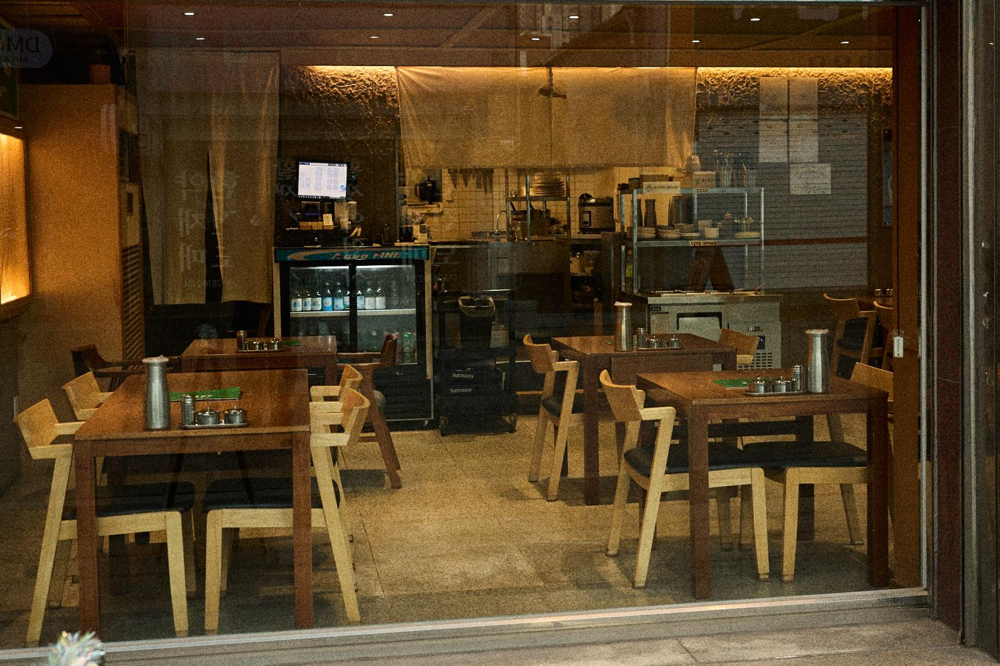

대구 송년회 장소·연말모임
— 약령시 약전골목 청우해장, 홀 40석·룸 없음
연말에 여럿이 모일 자리를 찾고 계신다면, 대구 중구 약령시 약전골목 1층의 청우해장을 보아 주세요. 홀 40석짜리 한식당이고 룸은 없습니다. 단체는 40명까지 전화로 예약을 받습니다. 상 가운데에 나눠 먹는 요리를 한두 접시 두고, 국은 사람마다 맑은 국과 얼큰한 국 가운데 고르시면 됩니다.

대구 연말모임 장소 — 몇 명까지, 어떻게 앉나요
자리는 홀 40석뿐이고, 따로 나뉜 방은 없습니다. 일행끼리만 쓰는 방이 꼭 있어야 하는 모임이라면 다른 곳이 맞습니다. 홀에서 함께 앉아도 괜찮은 송년회라면 053-255-7052로 날짜와 인원, 도착 시간을 미리 알려 주세요. 단체는 40명까지 예약을 받고, 인원이 많은 일행은 자리를 잡아 둡니다.
주문은 자리에서 테이블오더로 하고, 반찬은 셀프바에서 원하는 만큼 덜어 드시면 됩니다. 카드와 모바일 결제가 됩니다.
여럿이 나눠 먹는 상 — 가운데 한 접시, 국은 사람 수대로
모임 상은 가운데 요리와 사람마다 시키는 국으로 짜면 쉽습니다. 가운데에는 결 좋은 아롱사태를 삶아 얇게 저민 아롱사태 수육(소 18,000원·대 23,000원)이나, 아롱사태와 스지를 넣어 끓이는 아롱사태 수육 전골(33,000원)을 둡니다. 매운 걸 좋아하는 일행이 있으면 마늘을 산처럼 올린 소갈비찜 마늘폭탄(22,000원)을, 상 가운데를 넉넉하게 채우고 싶으면 아삭한 부추를 곁들인 새콤한 소꼬리찜(49,000원)을 더하시면 됩니다.
가격은 네이버 플레이스 메뉴 기준입니다. 메뉴 전체는 홈페이지 메뉴에 있습니다.
맑게도, 얼큰하게도 — 국물은 따로 고르기
국은 한 사람에 한 그릇씩 고르시면 됩니다. 맑은 해장국(12,000원)은 맵지 않은 맑은 소고기 국물이고, 대구 얼큰해장국(따로국밥, 13,000원)은 고춧가루를 기름에 풀어 얼큰하게 끓입니다. 든든하게 드시려면 부드러운 갈비의 청우 약전 소갈비탕(16,000원, 기본 갈빗대 2대)도 있습니다. 같은 상에서 맑은 국과 얼큰한 국을 함께 시킬 수 있어, 입맛이 다른 일행도 한자리에 앉기 좋습니다.
예약·영업시간·주차 — 연말 모임 전에 확인할 것
- 예약 — 053-255-7052 전화로만 받습니다. 날짜·인원·도착 시간을 알려 주세요. 단체는 40명까지.
- 영업시간 — 매일 11:00–22:00, 브레이크타임 15:00–17:00, 라스트오더 21:00. 저녁 모임은 17:00 이후로 잡으시면 됩니다. 12월 24·25·31일과 1월 1일 영업 여부는 전화로 확인해 주세요.
- 술 — 콜키지가 가능해 술을 가져오셔도 됩니다.
- 오시는 길 — 반월당역 15번 출구에서 걸어서 약 7분, 더현대 대구에서 약 6분, 중앙로역에서 약 10분입니다.
- 주차 — 전용 주차장은 없고 가게 앞에도 세울 수 없습니다. 약령시서문 공영주차장(도보 1분)을 이용해 주세요.
자주 묻는 질문
- 대구 송년회 장소로 룸이 있나요?
- 없습니다. 청우해장은 홀 40석뿐이고 따로 나뉜 방은 없습니다. 일행끼리만 쓰는 방이 꼭 필요한 모임이라면 다른 곳이 맞습니다.
- 연말모임은 몇 명까지 예약되나요?
- 단체는 40명까지 전화(053-255-7052)로 예약을 받습니다. 날짜와 인원, 도착 시간을 알려 주시면 자리를 잡아 둡니다.
- 모임에 술을 가져가도 되나요?
- 네, 콜키지가 가능해 술을 가져오셔도 됩니다.
- 저녁 모임은 몇 시까지 할 수 있나요?
- 영업은 22:00까지이고 라스트오더는 21:00입니다. 15:00–17:00은 브레이크타임이라 저녁 모임은 17:00 이후로 잡으시면 됩니다.
- 주차는 어디에 하나요?
- 전용 주차장은 없고 가게 앞에도 세울 수 없습니다. 약령시서문 공영주차장이 도보 1분입니다.
연말 모임 예약은 전화로
청우해장 — 약전 소갈비탕 · 맑은 해장국 · 대구 얼큰해장국 · 아롱사태 수육 · 소갈비찜 마늘폭탄
매일 11:00–22:00 (브레이크 15:00–17:00, 라스트오더 21:00) · 홀 40석, 단체 40명까지 전화 예약